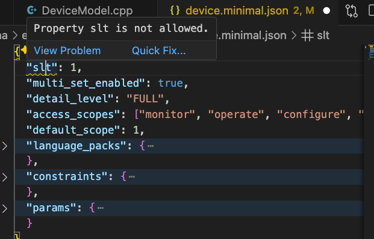
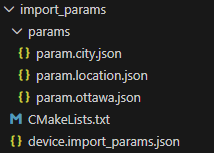
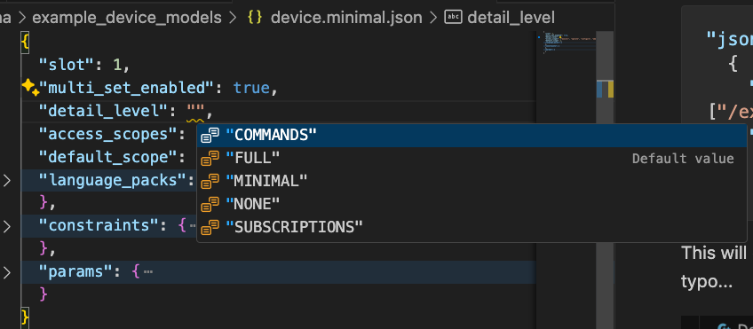
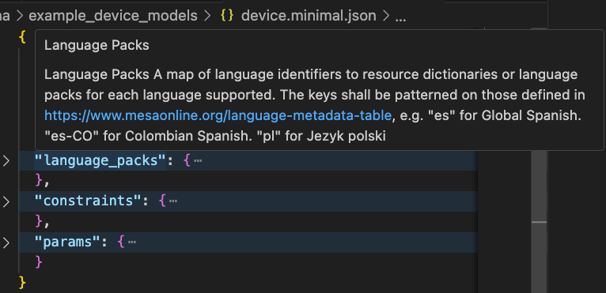

SMPTE ST 2138 (also known as the Catena standard) is an emerging standard by the Society of Motion Picture and Television Engineers that defines a standardized control plane for media devices and services. The ST2138-a specification provides schema definitions for plug-and-play communication and control of media services and devices across cloud, on-premises, and hybrid platforms.
The Catena specification is currently in discussion with OSA with the goal of SMPTE standardization. You can learn more about ST2138-a at:
The standard defines a comprehensive device model structure using protocol buffers and JSON schemas. Device models must conform to these schemas to ensure interoperability between different implementations and manufacturers.
Device models can quickly become complex, spanning multiple files with hundreds of parameters, constraints, commands, and menu structures. Manual verification of these models is error-prone and time-consuming. A validator is essential for several reasons:
The validator ensures your device model conforms to the ST2138-a schema before attempting to generate code or deploy the model. This catches:

Example: VSCode highlighting a validation error in a device model
Catena supports the import directive to break large device models
into manageable parts. Currently, Param objects can be
imported. The validator checks both:
The following device model shows two imported parameters. Full example can be found in device.import_params.json:
{
"params": {
"city": {
"import": {"file": "params/param.city.json"}
},
"plane_ticket": {
"type": "STRUCT",
"params": {
"departure": {
"import": {"file": "params/param.ottawa.json"}
},
"destination": {
"type": "STRUCT",
"template_oid": "/city"
}
},
}
}
}The import structure follows these rules (implemented in DeviceModel.js):
params sub-folder for
files named param.<name>.json or
param.<name>.yamlFile system for device.import_params.json example:

Schema validation for VSCode for JSON and YAML is already set up in
.vscode/settings.json. For YAML files, ensure you have the
YAML
extension installed. If you wish to set up schema validation
manually for another project, refer to the settings.json
file for example configuration. Configuration can be found under the
json.schemas and yaml.schemas sections.
With proper configuration, validators provide real-time feedback in your IDE:


Many issues that would cause runtime failures are caught at validation time:
The validation logic is integrated into the code generation pipeline in index.js, ensuring no invalid models make it to production.
According to the ST2138-a specification and enforced by the validation logic, a valid device model can only include:
slot: Device slot numberdefault_scope: Default access scope
(e.g., "st2138:mon")detail_level: Default detail level for
responsesaccess_scopes: Array of supported
access scopesmulti_set_enabled: Boolean indicating
multi-set supportsubscriptions: Boolean indicating
subscription supportconstraints: Container for shared
device constraintsparams: Container for a device
parameterscommands: Container for device
commandsmenu_groups: Container for editor UI
definitionslanguages_packs: Container for device
language packsThe product parameter must be a read-only STRUCT
containing all six required parameter definitions. The table below shows
which parameters must have values:
| Parameter | Type | Value Required | Description |
|---|---|---|---|
name |
STRING | Yes | Product name |
vendor |
STRING | Yes | Manufacturer name |
version |
STRING | Yes | Firmware/software version |
serial_number |
STRING | Yes | Unique device serial number |
catena_sdk |
STRING | No | SDK implementation name |
catena_sdk_version |
STRING | No | SDK version |
Important: All six parameters must be
defined in the params structure. However,
only the four marked as “Value Required” need actual values provided.
The optional parameters (catena_sdk and
catena_sdk_version) can be defined without initial
values—these values can be generated automatically at runtime by the SDK
if not provided.
All product parameters must have an access scope of
"st2138:mon" (monitor) or inherit it from parent
scopes.
Example from use_constraints:
{
"slot": 1,
"default_scope": "st2138:mon",
"params": {
"product": {
"type": "STRUCT",
"read_only": true,
"access_scope": "st2138:mon",
"params": {
"name": { "type": "STRING" },
"vendor": { "type": "STRING" },
"version": { "type": "STRING" },
"serial_number": { "type": "STRING" },
"catena_sdk": { "type": "STRING" },
"catena_sdk_version": { "type": "STRING" }
},
"value": {
"struct_value": {
"fields": {
"name": { "string_value": "My Device" },
"vendor": { "string_value": "Ross Video" },
"version": { "string_value": "1.0.0" },
"serial_number": { "string_value": "12345" }
}
}
}
}
}
}All parameters must use one of the supported types defined in the protobuf specification:
INT32, FLOAT32,
STRING, EMPTYSTRUCT, STRUCT_VARIANT,
INT32_ARRAY, FLOAT32_ARRAY,
STRING_ARRAY, STRUCT_ARRAY,
STRUCT_VARIANT_ARRAY, BINARY,
DATASee param.proto for complete type definitions.
Files must follow the naming pattern for schema detection:
device.<name>.json or
device.<name>.yamlparam.<name>.json or
param.<name>.yamlThe validator extracts the schema name from the first part of the filename.
All references must resolve correctly:
constraint_ref)There are multiple ways to validate your device models:
The standalone validator is located in smpte/tools/validate.js.
Usage:
cd ~/Catena
node smpte/tools/validate.js <path-to-your-file>Examples:
Validate a device model:
node smpte/tools/validate.js ./sdks/cpp/common/examples/hello_world/device.hello_world.json
# Output:
# Applying schema 'device' to file './sdks/cpp/common/examples/hello_world/device.hello_world.json'
# ✅ Validation succeeded.Validate a parameter file:
node smpte/tools/validate.js ./example_device_models/device_tree/params/variantlist_example/param.AudioSlot.json
# Output:
# Applying schema 'param' to file './example_device_models/device_tree/params/variantlist_example/param.AudioSlot.json'
# ✅ Validation succeeded.Validate a YAML file:
node smpte/tools/validate.js ./sdks/cpp/connections/gRPC/examples/one_of_everything/device.one_of_everything.yamlHow it works:
The validator (implemented in validator.js):
device, param)The ST2138-a validator is not yet published as a standalone NPM
package. However, you can use it via npx by referencing the local path
in your package.json:
{
"dependencies": {
"smpte-validator": "file:./smpte/tools"
}
}Then run with npx:
npx smpte-validator ./path/to/device.good.yamlThis method is useful when integrating validation into npm scripts or CI/CD pipelines.
When generating code, validation happens automatically. The codegen tool validates before generating:
cd ~/Catena/tools/codegen
node index.js --device-model ../../sdks/cpp/common/examples/hello_world/device.hello_world.json --output ./outputOutput:
Validating device model 'device' from file '../../sdks/cpp/common/examples/hello_world/device.hello_world.json'...
Applying schema 'device' to file '../../sdks/cpp/common/examples/hello_world/device.hello_world.json'
✅ Validation succeeded.
Generating code...
✅ Code generation completed.The validation includes: - Schema conformance check - Mandatory parameter enforcement (see validateRequiredParamsAndScopes) - Import resolution for multi-part models
To disable mandatory parameter enforcement during development:
node index.js --device-model ./device.test.json --disable-mandatory-enforcement --output ./output